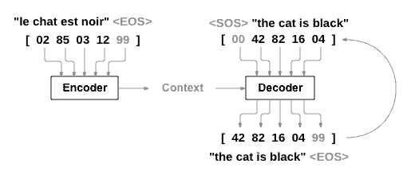
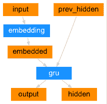
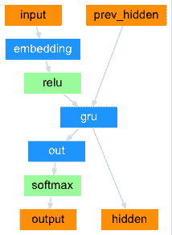
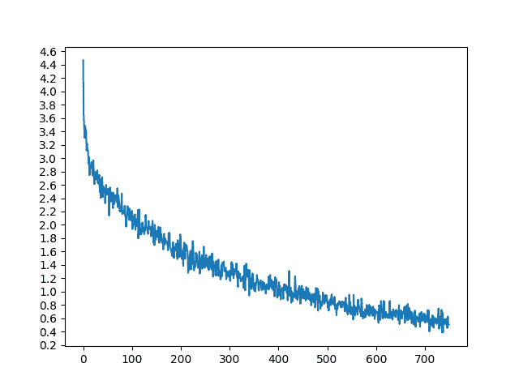
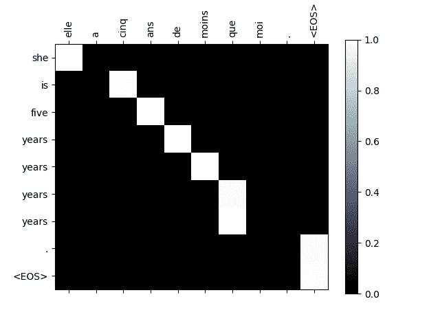
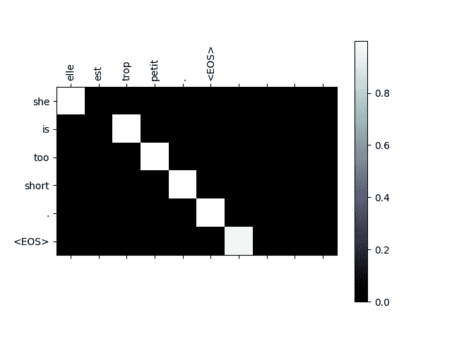
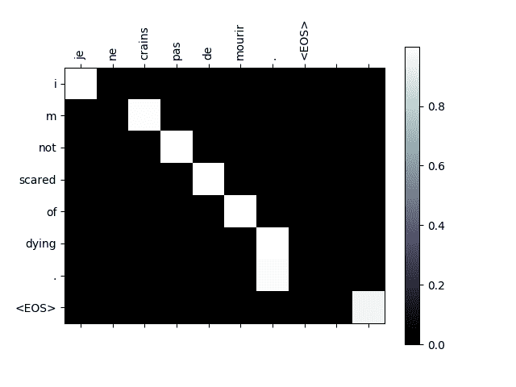
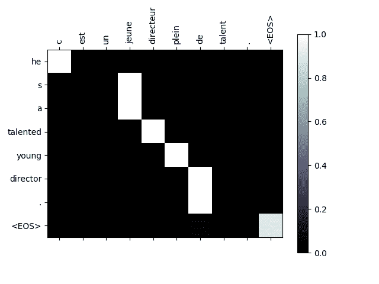

NLP From Scratch: 基于注意力机制的 seq2seq 神经网络翻译
原文： https://pytorch.org/tutorials/intermediate/seq2seq_translation_tutorial.html
注意
单击此处的下载完整的示例代码
作者： Sean Robertson
这是关于“从头开始进行 NLP”的第三篇也是最后一篇教程，我们在其中编写自己的类和函数来预处理数据以完成 NLP 建模任务。 我们希望在完成本教程后，您将继续学习紧接着本教程的三本教程， <cite>torchtext</cite> 如何为您处理许多此类预处理。
在这个项目中，我们将教授将法语翻译成英语的神经网络。
[KEY: > input, = target, < output]
> il est en train de peindre un tableau .
= he is painting a picture .
< he is painting a picture .
> pourquoi ne pas essayer ce vin delicieux ?
= why not try that delicious wine ?
< why not try that delicious wine ?
> elle n est pas poete mais romanciere .
= she is not a poet but a novelist .
< she not not a poet but a novelist .
> vous etes trop maigre .
= you re too skinny .
< you re all alone .
……取得不同程度的成功。
通过序列到序列网络的简单但强大的构想，使这成为可能，在该网络中，两个循环神经网络协同工作，将一个序列转换为另一个序列。 编码器网络将输入序列压缩为一个向量，而解码器网络将该向量展开为一个新序列。

为了改进此模型，我们将使用注意机制，该机制可让解码器学习将注意力集中在输入序列的特定范围内。
推荐读物：
我假设您至少已经安装了 PyTorch，了解 Python 和了解 Tensors：
- https://pytorch.org/ 有关安装说明
- 使用 PyTorch 进行深度学习：60 分钟的闪电战通常开始使用 PyTorch
- 使用示例学习 PyTorch 进行广泛而深入的概述
- PyTorch(以前的 Torch 用户）(如果您以前是 Lua Torch 用户）
了解序列到序列网络及其工作方式也将很有用：
您还将找到先前的 NLP 从零开始：使用字符级 RNN 对名称进行分类的教程，以及 NLP 从零开始：使用字符级 RNN 生成名称的指南，因为这些概念是有用的 分别与编码器和解码器模型非常相似。
有关更多信息，请阅读介绍以下主题的论文：
要求
from __future__ import unicode_literals, print_function, division
from io import open
import unicodedata
import string
import re
import random
import torch
import torch.nn as nn
from torch import optim
import torch.nn.functional as F
device = torch.device("cuda" if torch.cuda.is_available() else "cpu")
加载数据文件
该项目的数据是成千上万的英语到法语翻译对的集合。
开放数据堆栈交换上的这个问题使我指向开放翻译站点 https://tatoeba.org/ ，该站点可从 https://tatoeba.org/下载。 eng / downloads -更好的是，有人在这里做了额外的工作，将语言对拆分为单独的文本文件： https://www.manythings.org/anki/
英文对法文对太大，无法包含在仓库中，因此请先下载到data/eng-fra.txt，然后再继续。 该文件是制表符分隔的翻译对列表：
Note
从的下载数据，并将其提取到当前目录。
与字符级 RNN 教程中使用的字符编码类似，我们将一种语言中的每个单词表示为一个单向矢量，或者零外的一个巨大矢量(除了单个索引(在单词的索引处））。 与一种语言中可能存在的数十个字符相比，单词有很多，因此编码向量要大得多。 但是，我们将作弊并整理数据以使每种语言仅使用几千个单词。

我们需要每个单词一个唯一的索引，以便以后用作网络的输入和目标。 为了跟踪所有这些信息，我们将使用一个名为Lang的帮助程序类，该类具有单词→索引(word2index）和索引→单词(index2word）字典，以及每个要使用的单词word2count的计数 以便以后替换稀有词。
SOS_token = 0
EOS_token = 1
class Lang:
def __init__(self, name):
self.name = name
self.word2index = {}
self.word2count = {}
self.index2word = {0: "SOS", 1: "EOS"}
self.n_words = 2 # Count SOS and EOS
def addSentence(self, sentence):
for word in sentence.split(' '):
self.addWord(word)
def addWord(self, word):
if word not in self.word2index:
self.word2index[word] = self.n_words
self.word2count[word] = 1
self.index2word[self.n_words] = word
self.n_words += 1
else:
self.word2count[word] += 1
这些文件全部为 Unicode，为简化起见，我们将 Unicode 字符转换为 ASCII，将所有内容都转换为小写，并修剪大多数标点符号。
# Turn a Unicode string to plain ASCII, thanks to
# https://stackoverflow.com/a/518232/2809427
def unicodeToAscii(s):
return ''.join(
c for c in unicodedata.normalize('NFD', s)
if unicodedata.category(c) != 'Mn'
)
# Lowercase, trim, and remove non-letter characters
def normalizeString(s):
s = unicodeToAscii(s.lower().strip())
s = re.sub(r"([.!?])", r" \1", s)
s = re.sub(r"[^a-zA-Z.!?]+", r" ", s)
return s
要读取数据文件，我们将文件分成几行，然后将行分成两对。 这些文件都是英语→其他语言的，因此，如果我们要从其他语言→英语进行翻译，我添加了reverse标志来反转对。
def readLangs(lang1, lang2, reverse=False):
print("Reading lines...")
# Read the file and split into lines
lines = open('data/%s-%s.txt' % (lang1, lang2), encoding='utf-8').\
read().strip().split('\n')
# Split every line into pairs and normalize
pairs = [[normalizeString(s) for s in l.split('\t')] for l in lines]
# Reverse pairs, make Lang instances
if reverse:
pairs = [list(reversed(p)) for p in pairs]
input_lang = Lang(lang2)
output_lang = Lang(lang1)
else:
input_lang = Lang(lang1)
output_lang = Lang(lang2)
return input_lang, output_lang, pairs
由于示例句子的数量_很多_，并且我们想快速训练一些东西，因此我们将数据集修剪为仅相对较短和简单的句子。 在这里，最大长度为 10 个字(包括结尾的标点符号），并且我们正在过滤翻译成“我是”或“他是”等形式的句子(考虑到前面已替换掉撇号的情况）。
MAX_LENGTH = 10
eng_prefixes = (
"i am ", "i m ",
"he is", "he s ",
"she is", "she s ",
"you are", "you re ",
"we are", "we re ",
"they are", "they re "
)
def filterPair(p):
return len(p[0].split(' ')) < MAX_LENGTH and \
len(p[1].split(' ')) < MAX_LENGTH and \
p[1].startswith(eng_prefixes)
def filterPairs(pairs):
return [pair for pair in pairs if filterPair(pair)]
准备数据的完整过程是：
- 读取文本文件并拆分为行，将行拆分为成对
- 规范文本，按长度和内容过滤
- 成对建立句子中的单词列表
def prepareData(lang1, lang2, reverse=False):
input_lang, output_lang, pairs = readLangs(lang1, lang2, reverse)
print("Read %s sentence pairs" % len(pairs))
pairs = filterPairs(pairs)
print("Trimmed to %s sentence pairs" % len(pairs))
print("Counting words...")
for pair in pairs:
input_lang.addSentence(pair[0])
output_lang.addSentence(pair[1])
print("Counted words:")
print(input_lang.name, input_lang.n_words)
print(output_lang.name, output_lang.n_words)
return input_lang, output_lang, pairs
input_lang, output_lang, pairs = prepareData('eng', 'fra', True)
print(random.choice(pairs))
出：
Reading lines...
Read 135842 sentence pairs
Trimmed to 10599 sentence pairs
Counting words...
Counted words:
fra 4345
eng 2803
['je ne suis pas grand .', 'i m not tall .']
Seq2Seq 模型
递归神经网络(RNN）是在序列上运行并将其自身的输出用作后续步骤的输入的网络。
序列到序列网络或 seq2seq 网络或编码器解码器网络是由两个称为编码器和解码器的 RNN 组成的模型。 编码器读取输入序列并输出单个向量，而解码器读取该向量以产生输出序列。
与使用单个 RNN 进行序列预测(每个输入对应一个输出）不同，seq2seq 模型使我们摆脱了序列长度和顺序的限制，这使其非常适合在两种语言之间进行翻译。
考虑一下句子“ Je ne suis pas le chat noir”→“我不是黑猫”。 输入句子中的大多数单词在输出句子中具有直接翻译，但是顺序略有不同，例如 “黑猫聊天”和“黑猫”。 由于采用“ ne / pas”结构，因此在输入句子中还有一个单词。 直接从输入单词的序列中产生正确的翻译将是困难的。
使用 seq2seq 模型，编码器创建单个矢量，在理想情况下，该矢量将输入序列的“含义”编码为单个矢量-句子的某些 N 维空间中的单个点。
编码器
seq2seq 网络的编码器是 RNN，它为输入句子中的每个单词输出一些值。 对于每个输入字，编码器输出一个向量和一个隐藏状态，并将隐藏状态用于下一个输入字。

class EncoderRNN(nn.Module):
def __init__(self, input_size, hidden_size):
super(EncoderRNN, self).__init__()
self.hidden_size = hidden_size
self.embedding = nn.Embedding(input_size, hidden_size)
self.gru = nn.GRU(hidden_size, hidden_size)
def forward(self, input, hidden):
embedded = self.embedding(input).view(1, 1, -1)
output = embedded
output, hidden = self.gru(output, hidden)
return output, hidden
def initHidden(self):
return torch.zeros(1, 1, self.hidden_size, device=device)
解码器
解码器是另一个 RNN，它采用编码器输出矢量并输出单词序列来创建翻译。
简单解码器
在最简单的 seq2seq 解码器中，我们仅使用编码器的最后一个输出。 最后的输出有时称为_上下文向量_，因为它对整个序列的上下文进行编码。 该上下文向量用作解码器的初始隐藏状态。
在解码的每个步骤中，为解码器提供输入令牌和隐藏状态。 初始输入令牌是字符串开始<SOS>令牌，第一个隐藏状态是上下文向量(编码器的最后一个隐藏状态）。

class DecoderRNN(nn.Module):
def __init__(self, hidden_size, output_size):
super(DecoderRNN, self).__init__()
self.hidden_size = hidden_size
self.embedding = nn.Embedding(output_size, hidden_size)
self.gru = nn.GRU(hidden_size, hidden_size)
self.out = nn.Linear(hidden_size, output_size)
self.softmax = nn.LogSoftmax(dim=1)
def forward(self, input, hidden):
output = self.embedding(input).view(1, 1, -1)
output = F.relu(output)
output, hidden = self.gru(output, hidden)
output = self.softmax(self.out(output[0]))
return output, hidden
def initHidden(self):
return torch.zeros(1, 1, self.hidden_size, device=device)
我鼓励您训练并观察该模型的结果，但是为了节省空间，我们将直接努力，并引入注意机制。
注意解码器
如果仅上下文向量在编码器和解码器之间传递，则该单个向量承担对整个句子进行编码的负担。
注意使解码器网络可以针对解码器自身输出的每一步，“专注”于编码器输出的不同部分。 首先，我们计算一组_注意权重_。 将这些与编码器输出向量相乘以创建加权组合。 结果(在代码中称为attn_applied）应包含有关输入序列特定部分的信息，从而帮助解码器选择正确的输出字。

计算注意力权重的方法是使用另一个前馈层attn，并使用解码器的输入和隐藏状态作为输入。 由于训练数据中包含各种大小的句子，因此要实际创建和训练该层，我们必须选择可以应用的最大句子长度(输入长度，用于编码器输出）。 最大长度的句子将使用所有注意权重，而较短的句子将仅使用前几个。

class AttnDecoderRNN(nn.Module):
def __init__(self, hidden_size, output_size, dropout_p=0.1, max_length=MAX_LENGTH):
super(AttnDecoderRNN, self).__init__()
self.hidden_size = hidden_size
self.output_size = output_size
self.dropout_p = dropout_p
self.max_length = max_length
self.embedding = nn.Embedding(self.output_size, self.hidden_size)
self.attn = nn.Linear(self.hidden_size * 2, self.max_length)
self.attn_combine = nn.Linear(self.hidden_size * 2, self.hidden_size)
self.dropout = nn.Dropout(self.dropout_p)
self.gru = nn.GRU(self.hidden_size, self.hidden_size)
self.out = nn.Linear(self.hidden_size, self.output_size)
def forward(self, input, hidden, encoder_outputs):
embedded = self.embedding(input).view(1, 1, -1)
embedded = self.dropout(embedded)
attn_weights = F.softmax(
self.attn(torch.cat((embedded[0], hidden[0]), 1)), dim=1)
attn_applied = torch.bmm(attn_weights.unsqueeze(0),
encoder_outputs.unsqueeze(0))
output = torch.cat((embedded[0], attn_applied[0]), 1)
output = self.attn_combine(output).unsqueeze(0)
output = F.relu(output)
output, hidden = self.gru(output, hidden)
output = F.log_softmax(self.out(output[0]), dim=1)
return output, hidden, attn_weights
def initHidden(self):
return torch.zeros(1, 1, self.hidden_size, device=device)
Note
还有其他形式的注意力可以通过使用相对位置方法来解决长度限制问题。 阅读基于注意力的神经机器翻译的有效方法中的“本地注意力”信息。
训练
准备训练数据
为了训练，对于每一对，我们将需要一个输入张量(输入句子中单词的索引）和目标张量(目标句子中单词的索引）。 创建这些向量时，我们会将 EOS 令牌附加到两个序列上。
def indexesFromSentence(lang, sentence):
return [lang.word2index[word] for word in sentence.split(' ')]
def tensorFromSentence(lang, sentence):
indexes = indexesFromSentence(lang, sentence)
indexes.append(EOS_token)
return torch.tensor(indexes, dtype=torch.long, device=device).view(-1, 1)
def tensorsFromPair(pair):
input_tensor = tensorFromSentence(input_lang, pair[0])
target_tensor = tensorFromSentence(output_lang, pair[1])
return (input_tensor, target_tensor)
训练模型
为了进行训练，我们通过编码器运行输入语句，并跟踪每个输出和最新的隐藏状态。 然后，为解码器提供<SOS>令牌作为其第一个输入，并将编码器的最后一个隐藏状态作为其第一个隐藏状态。
“教师强制”的概念是使用实际目标输出作为每个下一个输入，而不是使用解码器的猜测作为下一个输入。 使用教师强制会导致其收敛更快，但是当使用受过训练的网络时，可能会显示不稳定。
您可以观察到以教师为主导的网络的输出，这些输出阅读的是连贯的语法，但却偏离了正确的翻译-直观地，它学会了代表输出语法，并且一旦老师说了最初的几个单词就可以“理解”含义，但是 首先，它还没有正确地学习如何从翻译中创建句子。
由于 PyTorch 的 autograd 具有给我们的自由，我们可以通过简单的 if 语句随意选择是否使用教师强迫。 调高teacher_forcing_ratio以使用更多功能。
teacher_forcing_ratio = 0.5
def train(input_tensor, target_tensor, encoder, decoder, encoder_optimizer, decoder_optimizer, criterion, max_length=MAX_LENGTH):
encoder_hidden = encoder.initHidden()
encoder_optimizer.zero_grad()
decoder_optimizer.zero_grad()
input_length = input_tensor.size(0)
target_length = target_tensor.size(0)
encoder_outputs = torch.zeros(max_length, encoder.hidden_size, device=device)
loss = 0
for ei in range(input_length):
encoder_output, encoder_hidden = encoder(
input_tensor[ei], encoder_hidden)
encoder_outputs[ei] = encoder_output[0, 0]
decoder_input = torch.tensor([[SOS_token]], device=device)
decoder_hidden = encoder_hidden
use_teacher_forcing = True if random.random() < teacher_forcing_ratio else False
if use_teacher_forcing:
# Teacher forcing: Feed the target as the next input
for di in range(target_length):
decoder_output, decoder_hidden, decoder_attention = decoder(
decoder_input, decoder_hidden, encoder_outputs)
loss += criterion(decoder_output, target_tensor[di])
decoder_input = target_tensor[di] # Teacher forcing
else:
# Without teacher forcing: use its own predictions as the next input
for di in range(target_length):
decoder_output, decoder_hidden, decoder_attention = decoder(
decoder_input, decoder_hidden, encoder_outputs)
topv, topi = decoder_output.topk(1)
decoder_input = topi.squeeze().detach() # detach from history as input
loss += criterion(decoder_output, target_tensor[di])
if decoder_input.item() == EOS_token:
break
loss.backward()
encoder_optimizer.step()
decoder_optimizer.step()
return loss.item() / target_length
这是一个帮助功能，用于在给定当前时间和进度％的情况下打印经过的时间和估计的剩余时间。
import time
import math
def asMinutes(s):
m = math.floor(s / 60)
s -= m * 60
return '%dm %ds' % (m, s)
def timeSince(since, percent):
now = time.time()
s = now - since
es = s / (percent)
rs = es - s
return '%s (- %s)' % (asMinutes(s), asMinutes(rs))
整个训练过程如下所示：
- 启动计时器
- 初始化优化器和标准
- 创建一组训练对
- 启动空损耗阵列进行绘图
然后我们多次调用train，并偶尔打印进度(示例的百分比，到目前为止的时间，估计的时间）和平均损失。
def trainIters(encoder, decoder, n_iters, print_every=1000, plot_every=100, learning_rate=0.01):
start = time.time()
plot_losses = []
print_loss_total = 0 # Reset every print_every
plot_loss_total = 0 # Reset every plot_every
encoder_optimizer = optim.SGD(encoder.parameters(), lr=learning_rate)
decoder_optimizer = optim.SGD(decoder.parameters(), lr=learning_rate)
training_pairs = [tensorsFromPair(random.choice(pairs))
for i in range(n_iters)]
criterion = nn.NLLLoss()
for iter in range(1, n_iters + 1):
training_pair = training_pairs[iter - 1]
input_tensor = training_pair[0]
target_tensor = training_pair[1]
loss = train(input_tensor, target_tensor, encoder,
decoder, encoder_optimizer, decoder_optimizer, criterion)
print_loss_total += loss
plot_loss_total += loss
if iter % print_every == 0:
print_loss_avg = print_loss_total / print_every
print_loss_total = 0
print('%s (%d %d%%) %.4f' % (timeSince(start, iter / n_iters),
iter, iter / n_iters * 100, print_loss_avg))
if iter % plot_every == 0:
plot_loss_avg = plot_loss_total / plot_every
plot_losses.append(plot_loss_avg)
plot_loss_total = 0
showPlot(plot_losses)
绘图结果
使用训练时保存的损失值数组plot_losses，使用 matplotlib 进行绘制。
import matplotlib.pyplot as plt
plt.switch_backend('agg')
import matplotlib.ticker as ticker
import numpy as np
def showPlot(points):
plt.figure()
fig, ax = plt.subplots()
# this locator puts ticks at regular intervals
loc = ticker.MultipleLocator(base=0.2)
ax.yaxis.set_major_locator(loc)
plt.plot(points)
评价
评估与训练基本相同，但是没有目标，因此我们只需将解码器的预测反馈给每一步。 每当它预测一个单词时，我们都会将其添加到输出字符串中，如果它预测到 EOS 令牌，我们将在此处停止。 我们还将存储解码器的注意输出，以供以后显示。
def evaluate(encoder, decoder, sentence, max_length=MAX_LENGTH):
with torch.no_grad():
input_tensor = tensorFromSentence(input_lang, sentence)
input_length = input_tensor.size()[0]
encoder_hidden = encoder.initHidden()
encoder_outputs = torch.zeros(max_length, encoder.hidden_size, device=device)
for ei in range(input_length):
encoder_output, encoder_hidden = encoder(input_tensor[ei],
encoder_hidden)
encoder_outputs[ei] += encoder_output[0, 0]
decoder_input = torch.tensor([[SOS_token]], device=device) # SOS
decoder_hidden = encoder_hidden
decoded_words = []
decoder_attentions = torch.zeros(max_length, max_length)
for di in range(max_length):
decoder_output, decoder_hidden, decoder_attention = decoder(
decoder_input, decoder_hidden, encoder_outputs)
decoder_attentions[di] = decoder_attention.data
topv, topi = decoder_output.data.topk(1)
if topi.item() == EOS_token:
decoded_words.append('<EOS>')
break
else:
decoded_words.append(output_lang.index2word[topi.item()])
decoder_input = topi.squeeze().detach()
return decoded_words, decoder_attentions[:di + 1]
我们可以从训练集中评估随机句子，并打印出输入，目标和输出以做出一些主观的质量判断：
def evaluateRandomly(encoder, decoder, n=10):
for i in range(n):
pair = random.choice(pairs)
print('>', pair[0])
print('=', pair[1])
output_words, attentions = evaluate(encoder, decoder, pair[0])
output_sentence = ' '.join(output_words)
print('<', output_sentence)
print('')
训练与评估
有了所有这些帮助器功能(看起来像是额外的工作，但它使运行多个实验更加容易），我们实际上可以初始化网络并开始训练。
请记住，输入句子已被严格过滤。 对于这个小的数据集，我们可以使用具有 256 个隐藏节点和单个 GRU 层的相对较小的网络。 在 MacBook CPU 上运行约 40 分钟后，我们将获得一些合理的结果。
Note
如果运行此笔记本，则可以进行训练，中断内核，评估并在以后继续进行训练。 注释掉编码器和解码器已初始化的行，然后再次运行trainIters。
hidden_size = 256
encoder1 = EncoderRNN(input_lang.n_words, hidden_size).to(device)
attn_decoder1 = AttnDecoderRNN(hidden_size, output_lang.n_words, dropout_p=0.1).to(device)
trainIters(encoder1, attn_decoder1, 75000, print_every=5000)

- 
Out:
1m 54s (- 26m 42s) (5000 6%) 2.8452
3m 44s (- 24m 19s) (10000 13%) 2.2926
5m 34s (- 22m 17s) (15000 20%) 1.9628
7m 24s (- 20m 23s) (20000 26%) 1.7224
9m 15s (- 18m 31s) (25000 33%) 1.4997
11m 7s (- 16m 41s) (30000 40%) 1.3610
12m 58s (- 14m 49s) (35000 46%) 1.2299
14m 48s (- 12m 57s) (40000 53%) 1.0881
16m 38s (- 11m 5s) (45000 60%) 0.9991
18m 29s (- 9m 14s) (50000 66%) 0.9053
20m 19s (- 7m 23s) (55000 73%) 0.8031
22m 8s (- 5m 32s) (60000 80%) 0.7141
23m 58s (- 3m 41s) (65000 86%) 0.6693
25m 48s (- 1m 50s) (70000 93%) 0.6342
27m 38s (- 0m 0s) (75000 100%) 0.5604
Out:
> je suis tres serieux .
= i m quite serious .
< i m very serious . <EOS>
> tu es creatif .
= you re creative .
< you re creative . <EOS>
> j attends de vos nouvelles .
= i m looking forward to hearing from you .
< i m looking forward to hearing from you . <EOS>
> tu es un de ces pauvres types !
= you re such a jerk .
< you re such a jerk . <EOS>
> je ne suis pas si preoccupe .
= i m not that worried .
< i m not that worried . <EOS>
> vous etes avides .
= you re greedy .
< you re greedy . <EOS>
> ils ne sont pas satisfaits .
= they re not happy .
< they re not happy . <EOS>
> nous avons tous peur .
= we re all afraid .
< we re all scared . <EOS>
> nous sommes tous uniques .
= we re all unique .
< we re all unique . <EOS>
> c est un tres chouette garcon .
= he s a very nice boy .
< he s a very nice boy . <EOS>
可视化注意力
注意机制的一个有用特性是其高度可解释的输出。 因为它用于加权输入序列的特定编码器输出，所以我们可以想象一下在每个时间步长上网络最关注的位置。
您可以简单地运行plt.matshow(attentions)以将注意力输出显示为矩阵，其中列为输入步骤，行为输出步骤：
output_words, attentions = evaluate(
encoder1, attn_decoder1, "je suis trop froid .")
plt.matshow(attentions.numpy())

为了获得更好的观看体验，我们将做一些额外的工作来添加轴和标签：
def showAttention(input_sentence, output_words, attentions):
# Set up figure with colorbar
fig = plt.figure()
ax = fig.add_subplot(111)
cax = ax.matshow(attentions.numpy(), cmap='bone')
fig.colorbar(cax)
# Set up axes
ax.set_xticklabels([''] + input_sentence.split(' ') +
['<EOS>'], rotation=90)
ax.set_yticklabels([''] + output_words)
# Show label at every tick
ax.xaxis.set_major_locator(ticker.MultipleLocator(1))
ax.yaxis.set_major_locator(ticker.MultipleLocator(1))
plt.show()
def evaluateAndShowAttention(input_sentence):
output_words, attentions = evaluate(
encoder1, attn_decoder1, input_sentence)
print('input =', input_sentence)
print('output =', ' '.join(output_words))
showAttention(input_sentence, output_words, attentions)
evaluateAndShowAttention("elle a cinq ans de moins que moi .")
evaluateAndShowAttention("elle est trop petit .")
evaluateAndShowAttention("je ne crains pas de mourir .")
evaluateAndShowAttention("c est un jeune directeur plein de talent .")
- 
- 
- 
- 
Out:
input = elle a cinq ans de moins que moi .
output = she is five years years years years . <EOS>
input = elle est trop petit .
output = she is too short . <EOS>
input = je ne crains pas de mourir .
output = i m not scared of dying . <EOS>
input = c est un jeune directeur plein de talent .
output = he s a talented young director . <EOS>
练习题
- 尝试使用其他数据集
- 另一对语言
- 人机→机器(例如 IOT 命令）
- 聊天→回复
- 问题→答案
- 用预先训练的单词嵌入(例如 word2vec 或 GloVe）替换嵌入
- 尝试使用更多层，更多隐藏单元和更多句子。 比较训练时间和结果。
- 如果您使用的翻原文件中，对具有两个相同的词组(
I am test \t I am test），则可以将其用作自动编码器。 尝试这个：- 训练为自动编码器
- 仅保存编码器网络
- 从那里训练新的解码器进行翻译
脚本的总运行时间：(27 分钟 45.966 秒）
Download Python source code: seq2seq_translation_tutorial.py Download Jupyter notebook: seq2seq_translation_tutorial.ipynb
由狮身人面像画廊生成的画廊